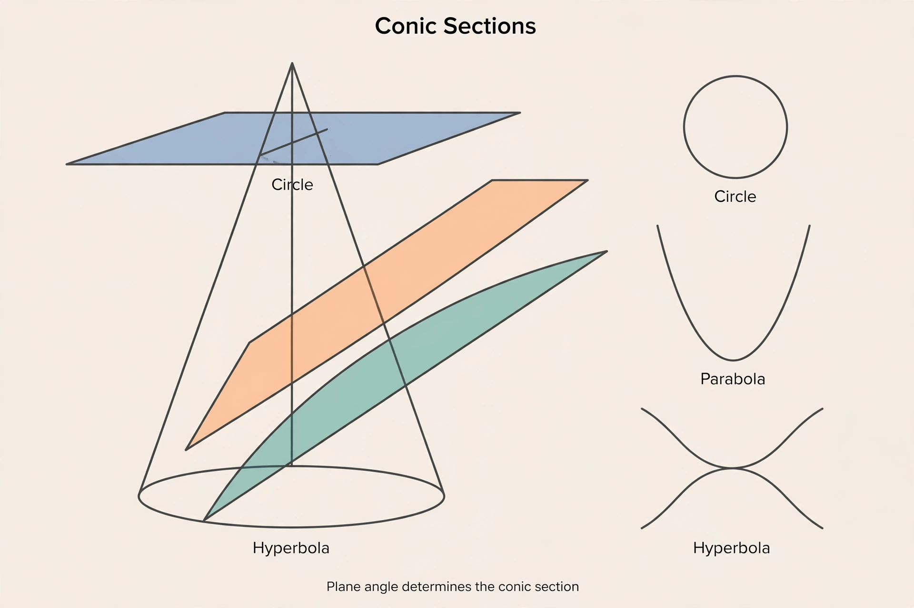

Conic section

[Image: A double cone sliced at three angles producing a circle, parabola and hyperbola]
A conic section is a curve obtained by intersecting a cone with a plane: depending on the angle, the slice is a circle, an ellipse, a parabola or a hyperbola (with degenerate cases of a point or lines). The conics were studied by Apollonius of Perga around 200 BC in a work of eight books that remained the authority for two millennia.
In analytic geometry the conics are exactly the curves defined by second-degree equations in two variables, classified by the discriminant; in physics they are the possible orbits of one body around another under gravity.
Importance
Kepler's ellipses, Galileo's parabolas and hyperbolic comet paths made the conics the first great success of mathematical physics. Reflective properties of each conic drive the design of telescopes, antennas and whispering galleries.
Projective geometry treats all non-degenerate conics as the same curve viewed from different vantage points — an early triumph of the idea that geometry is about invariants.